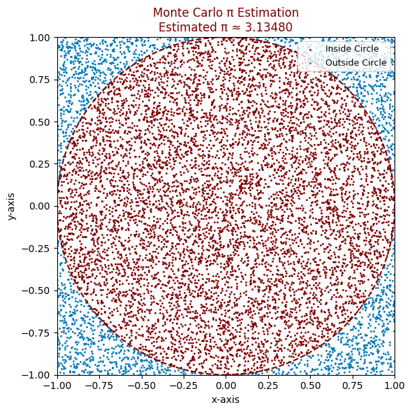
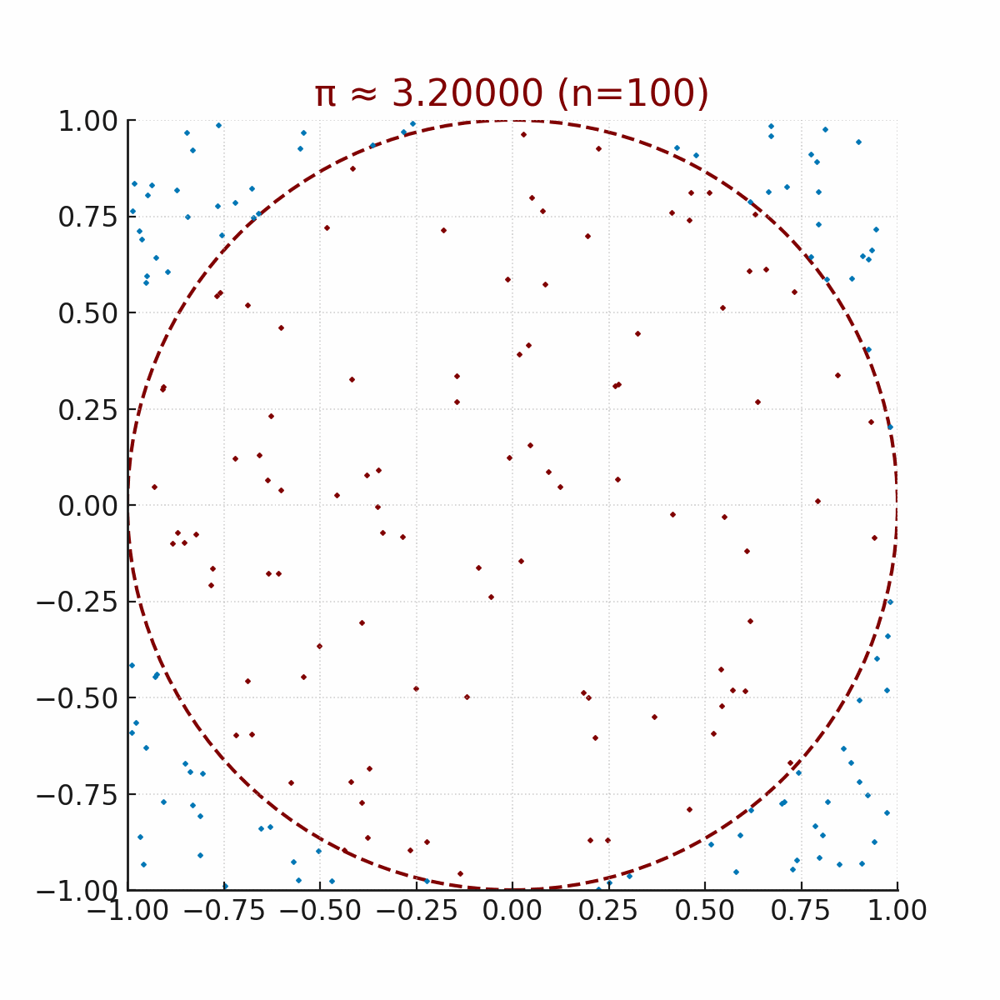
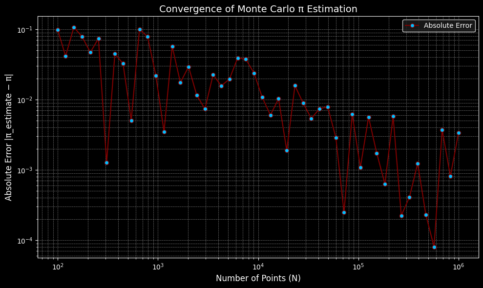
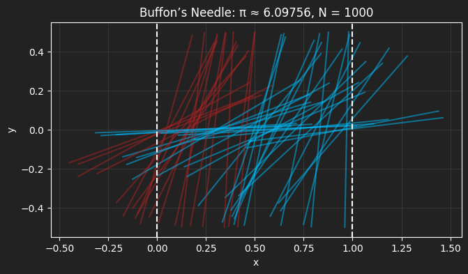
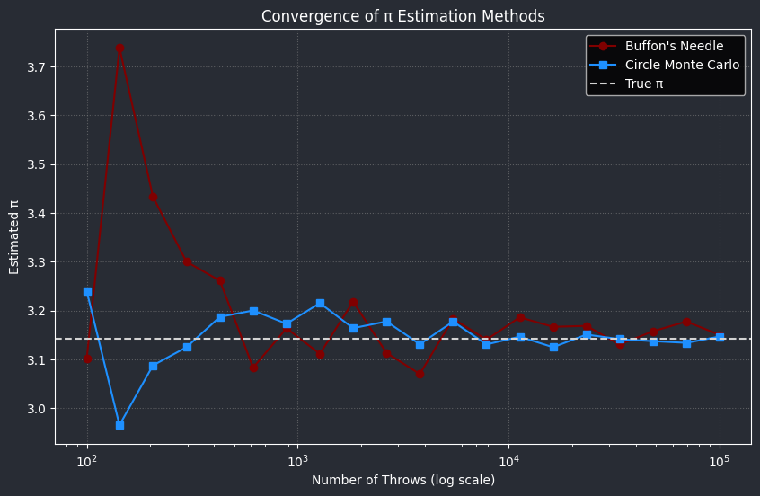
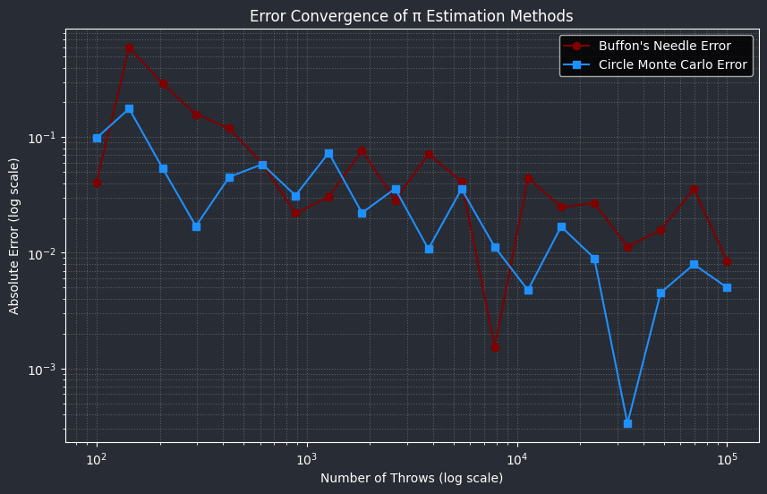

Problem 2
📘 Section 1: Approximating π Using a Circle
1. Theoretical Background
🧠 Conceptual Insight
Monte Carlo techniques apply randomness to tackle problems that are fundamentally deterministic. To approximate π, we leverage the geometric connection between a circle and the square that encloses it:
- Imagine a unit circle (radius = 1) centered at the origin (0, 0).
- This circle fits perfectly within a square with a side length of 2, spanning coordinates from (-1, -1) to (1, 1).
- The area of the unit circle is:
$$ A_{circle} = \pi r^2 = \pi \cdot 1^2 = \pi $$
- The area of the surrounding square is:
$$ A_{square} = (2r)^2 = (2 \cdot 1)^2 = 4 $$
- The ratio between these areas becomes:
$$ \frac{A_{circle}}{A_{square}} = \frac{\pi}{4} $$
So, when we uniformly sample points at random within the square, the likelihood that a point lands inside the circle is:
$$ P(\text{point inside circle}) = \frac{\pi}{4} $$
🔢 Estimating π via Monte Carlo
To derive π using this probabilistic approach:
- Generate many random coordinate pairs \((x, y)\) in the square \([-1, 1] \times [-1, 1]\).
- Determine whether each point lies within the unit circle using:
$$ x^2 + y^2 \leq 1 $$
- Record the number of points that fall inside the circle: \(N_{circle}\)
- Note the total number of sampled points: \(N_{total}\)
- Estimate π using the expression:
$$ \hat{\pi} = 4 \cdot \frac{N_{circle}}{N_{total}} $$
✅ Key Takeaways
- Monte Carlo estimation of π depends on simulating random events and comparing relative counts.
- The more points you sample (\(N_{total}\)), the closer the estimate gets to the true value of π.
- This strategy intuitively combines geometry, probability, and numerical simulation.

import matplotlib.pyplot as plt
import numpy as np
# Set a fixed seed for reproducibility
np.random.seed(42)
# Total number of random points
N_total = 10000
# Generate random (x, y) pairs between -1 and 1
x = np.random.uniform(-1, 1, N_total)
y = np.random.uniform(-1, 1, N_total)
# Compute whether each point falls inside the unit circle
inside_circle = x**2 + y**2 <= 1
# Estimate pi
N_circle = np.sum(inside_circle)
pi_estimate = 4 * N_circle / N_total
# Create the plot
fig, ax = plt.subplots(figsize=(6, 6))
ax.set_aspect("equal")
# Plot inside-circle points in maroon (bordo), outside in blue (mavi)
ax.scatter(x[inside_circle], y[inside_circle], color="#800000", s=1, label='Inside Circle')
ax.scatter(x[~inside_circle], y[~inside_circle], color="#0077B6", s=1, label='Outside Circle')
# Draw the unit circle for reference
circle = plt.Circle((0, 0), 1, edgecolor="#800000", facecolor='none', linewidth=1.5, linestyle='--')
ax.add_patch(circle)
# Aesthetic settings
ax.set_title(f"Monte Carlo π Estimation\nEstimated π ≈ {pi_estimate:.5f}", fontsize=12, color="#800000")
ax.set_xlabel("x-axis", fontsize=10)
ax.set_ylabel("y-axis", fontsize=10)
ax.legend(loc="upper right", fontsize=9)
ax.set_xlim([-1, 1])
ax.set_ylim([-1, 1])
ax.grid(True, linestyle=':', alpha=0.6)
plt.tight_layout()
plt.show()
🖥 2. Running the Simulation
In this part, we carry out a Monte Carlo simulation to approximate the value of π by randomly placing points within a square and evaluating how many land inside a circle inscribed within it.
🧪 Simulation Procedure
- We define a unit circle with radius 1, centered at the origin \((0,0)\).
- This circle is perfectly enclosed in a square with side length 2, spanning the coordinate range:
$$ [-1, 1] \times [-1, 1] $$
- The core idea is to generate \(N\) random coordinate pairs \((x, y)\) uniformly across the square and determine how many fall within the bounds of the circle.
➕ Condition for Being Inside the Circle
- A point \((x, y)\) is considered within the circle if it satisfies the inequality:
$$ x^2 + y^2 \leq 1 $$
- Let \(N_{\text{circle}}\) represent the number of such valid points.
- Let \(N_{\text{total}}\) be the full count of generated points.
🔢 Formula for Estimating π
- The theoretical chance that a point falls inside the circle is approximately:
$$ P = \frac{\pi}{4} $$
- Hence, the Monte Carlo estimate for π becomes:
$$ \hat{\pi} = 4 \cdot \frac{N_{\text{circle}}}{N_{\text{total}}} $$
📝 Observations
- Increasing \(N_{\text{total}}\) typically leads to a more precise approximation of π.
- Since the simulation is based on random sampling, results may vary slightly with each run.
- This method is conceptually straightforward and provides a visual, hands-on way to explore mathematical estimation.
> ✅ This simulation highlights how random sampling and geometry can work together to approximate a fundamental constant like π.
3. Visualization
The Python script below produces a scatter plot, differentiating between points that land inside versus outside the circle.

import numpy as np
import matplotlib.pyplot as plt
# Set random seed for reproducibility
np.random.seed(42)
def estimate_pi_circle(N):
# Generate N random points in [-1, 1] x [-1, 1]
x = np.random.uniform(-1, 1, N)
y = np.random.uniform(-1, 1, N)
# Check which points lie inside the unit circle
inside_circle = x**2 + y**2 <= 1
M = np.sum(inside_circle)
# Estimate pi
pi_estimate = 4 * M / N
return x, y, inside_circle, pi_estimate
# Run simulation with N = 10000
N = 10000
x, y, inside_circle, pi_estimate = estimate_pi_circle(N)
# Plot
plt.figure(figsize=(8, 8))
plt.scatter(x[inside_circle], y[inside_circle], c='blue', s=1, label='Inside Circle')
plt.scatter(x[~inside_circle], y[~inside_circle], c='red', s=1, label='Outside Circle')
circle = plt.Circle((0, 0), 1, edgecolor='black', facecolor='none')
plt.gca().add_patch(circle)
plt.gca().set_aspect('equal')
plt.xlim(-1, 1)
plt.ylim(-1, 1)
plt.title(f'Circle Method: π ≈ {pi_estimate:.5f}, N = {N}')
plt.xlabel('x')
plt.ylabel('y')
plt.legend()
plt.grid(True)
plt.show()
print(f"Estimated π: {pi_estimate}")
4 Analysis

import numpy as np
import matplotlib.pyplot as plt
# Dark theme setup
plt.style.use('dark_background')
# Monte Carlo π estimation function
def estimate_pi_circle(N):
np.random.seed(0)
x = np.random.rand(N)
y = np.random.rand(N)
inside_circle = (x**2 + y**2) <= 1
count_inside = np.sum(inside_circle)
pi_estimate = 4 * count_inside / N
return x, y, inside_circle, pi_estimate
# Sample sizes (logarithmic scale)
Ns = np.logspace(2, 6, num=50, dtype=int)
errors = []
pi_true = np.pi
for N in Ns:
_, _, _, pi_estimate = estimate_pi_circle(N)
errors.append(abs(pi_estimate - pi_true))
# Plotting
plt.figure(figsize=(10, 6))
plt.loglog(
Ns, errors,
marker='o',
linestyle='-',
color='#800000', # Bordo line
markerfacecolor='#00BFFF', # Mavi markers
markeredgecolor='#800000',
label='Absolute Error'
)
plt.title('Convergence of Monte Carlo π Estimation', fontsize=14, color='white')
plt.xlabel('Number of Points (N)', fontsize=12, color='white')
plt.ylabel('Absolute Error |π_estimate − π|', fontsize=12, color='white')
plt.grid(True, which='both', linestyle='--', linewidth=0.5, color='gray')
plt.legend(facecolor='#1e1e1e', edgecolor='white')
plt.tight_layout()
plt.show()
✅ SECTION 2: Approximating π Using Buffon’s Experiment
📘 1. Conceptual Framework
🧠 Introduction to Buffon’s Needle Puzzle
Buffon’s Needle is a classic probability puzzle that offers a technique to approximate π through random trials involving dropping a needle onto a surface marked with parallel lines. The puzzle investigates the likelihood that a needle of length \(L\) dropped randomly onto a floor with parallel lines spaced \(d\) units apart will intersect one of these lines.
🔍 Puzzle Configuration and Presumptions
- The surface features parallel lines separated by a distance \(d\).
- A needle of length \(L\) is randomly cast onto the surface.
- The needle’s placement is defined by:
- The separation \(x\) from the needle’s midpoint to the closest line (where \(0 \leq x \leq \frac{d}{2}\)).
- The angle \(\theta\) between the needle and the parallel lines, with \(\theta\) being uniformly distributed within \([0, \frac{\pi}{2}]\) due to symmetry.
📐 Requirement for Needle Intersecting a Line
The needle intersects a line if the separation from its midpoint to the nearest line is less than or equal to half of the needle’s projected length on the axis perpendicular to the lines:
📊 Likelihood of Intersection
The probability \(P\) that a needle intersects a line is derived by integrating across all possible positions and orientations, resulting in:
This formula assumes \(L \leq d\).
🔢 Derivation of the π Approximation Formula
Let:
- \(L\) = length of the needle
- \(d\) = spacing between the parallel lines
- \(N\) = total count of needle drops
- \(C\) = count of instances the needle intersects a line
From the observed empirical probability,
and equating to the theoretical probability,
Solving for π, we obtain the estimate:
✅ Conclusion
- Buffon’s Needle puzzle links geometry and probability to estimate π.
- It presents an elegant, physical experiment-based approach to numerical approximation.
- Precision enhances as \(N\) (number of needle drops) rises.
- The puzzle serves as a fundamental instance in geometric probability and Monte Carlo techniques.
2. Emulation
We now proceed to implement the emulation of Buffon’s Needle experiment to approximate π.
Emulation Procedure
- Step 1: Emulate \(N\) random needle drops on a surface with parallel lines spaced by distance \(d\).
- Step 2: For each needle drop:
- Sample the needle's midpoint position \(x\) uniformly from \([0, d/2]\).
- Sample the needle's orientation angle \(\theta\) uniformly from \([0, \pi/2]\).
- Step 3: Ascertain whether the needle intersects a line by verifying the condition:
- Step 4: Tally the number of intersections \(C\).
- Step 5: Approximate π using the formula:
3 Visual Representation

import numpy as np
import matplotlib.pyplot as plt
# Set random seed
np.random.seed(42)
def estimate_pi_buffon(N, l=1, d=1):
# Random midpoint x (y is irrelevant for horizontal lines), and angle theta
x_mid = np.random.uniform(0, d, N) # Midpoint x between 0 and d
theta = np.random.uniform(0, np.pi/2, N) # Angle between 0 and π/2
# Distance from midpoint to nearest line
crossings = np.abs(l/2 * np.sin(theta)) >= (x_mid % d)
M = np.sum(crossings)
# Estimate pi
pi_estimate = 2 * N / M if M > 0 else np.inf
return x_mid, theta, crossings, pi_estimate
# Run simulation with N = 1000
N = 1000
x_mid, theta, crossings, pi_estimate = estimate_pi_buffon(N)
# Plot
plt.figure(figsize=(10, 4), facecolor='#222222') # Dark background
ax = plt.gca()
ax.set_facecolor('#222222')
ax.tick_params(axis='x', colors='white')
ax.tick_params(axis='y', colors='white')
ax.spines['bottom'].set_color('white')
ax.spines['top'].set_color('white')
ax.spines['left'].set_color('white')
ax.spines['right'].set_color('white')
for i in range(min(N, 50)): # Plot up to 50 needles
x_c = x_mid[i]
t = theta[i]
x1 = x_c - 0.5 * np.cos(t)
x2 = x_c + 0.5 * np.cos(t)
y1 = -0.5 * np.sin(t)
y2 = 0.5 * np.sin(t)
color = '#B22222' if crossings[i] else '#00BFFF' # bordo and mavi
plt.plot([x1, x2], [y1, y2], color, alpha=0.5)
# Plot lines
for x in [0, 1]:
plt.axvline(x, color='white', linestyle='--')
plt.title(f'Buffon’s Needle: π ≈ {pi_estimate:.5f}, N = {N}', color='white')
plt.xlabel('x', color='white')
plt.ylabel('y', color='white')
plt.gca().set_aspect('equal')
plt.grid(True, color='gray', alpha=0.2)
plt.show()
print(f"Estimated π: {pi_estimate}")
4. Evaluation
We examine the convergence behavior of the Buffon’s Needle simulation and contrast it with the circle-based Monte Carlo technique for approximating π.
🔍 Aims
- Execute the Buffon’s Needle simulation for increasing counts of throws \(N\).
- Observe how the approximation of π enhances (converges) as \(N\) increases.
- Chart the convergence of π approximations against the number of throws.
- Assess the convergence speed and precision against the circle-based Monte Carlo method.
📈 Approach
- Define a sequence of sample sizes: \(N_1 < N_2 < \dots < N_k\).
- For each \(N_i\):
- Execute the Buffon’s Needle simulation and document the approximated π value, \(\hat{\pi}_{needle}(N_i)\).
- Execute the circle-based Monte Carlo simulation and document the approximated π value, \(\hat{\pi}_{circle}(N_i)\).
- Plot \(\hat{\pi}\) vs. \(N\) for both methods on a shared graph.
- Evaluate the error:
🔧 Python Implementation for Evaluation


import numpy as np
import matplotlib.pyplot as plt
# Buffon's Needle simulation function
def buffon_needle_pi_estimate(L, d, N):
x_centers = np.random.uniform(0, d/2, N)
angles = np.random.uniform(0, np.pi/2, N)
crossings = x_centers <= (L/2)*np.sin(angles)
C = np.sum(crossings)
if C == 0:
return np.nan
return (2 * L * N) / (d * C)
# Circle-based Monte Carlo π estimation
def monte_carlo_circle_pi(N):
points = np.random.uniform(-1, 1, (N, 2))
inside_circle = np.sum(points[:,0]**2 + points[:,1]**2 <= 1)
return 4 * inside_circle / N
# Parameters
L = 1.0
d = 1.5
sample_sizes = np.logspace(2, 5, num=20, dtype=int) # From 100 to 100,000 throws
needle_estimates = []
circle_estimates = []
for N in sample_sizes:
pi_needle = buffon_needle_pi_estimate(L, d, N)
pi_circle = monte_carlo_circle_pi(N)
needle_estimates.append(pi_needle)
circle_estimates.append(pi_circle)
# Define custom colors
bordo = '#800000' # A shade of red for 'bordo'
mavi = '#1E90FF' # A shade of blue for 'mavi'
dark_background = '#282C34' # A dark gray background
# Plotting convergence
plt.figure(figsize=(10, 6), facecolor=dark_background)
ax1 = plt.gca()
ax1.set_facecolor(dark_background)
plt.plot(sample_sizes, needle_estimates, 'o-', label="Buffon's Needle", color=bordo, markersize=6, linewidth=1.5)
plt.plot(sample_sizes, circle_estimates, 's-', label="Circle Monte Carlo", color=mavi, markersize=6, linewidth=1.5)
plt.axhline(np.pi, color='lightgray', linestyle='--', label="True π", linewidth=1.5) # True pi line
plt.xscale('log')
# Set text and tick colors to white for better contrast on dark background
ax1.set_xlabel("Number of Throws (log scale)", color='white')
ax1.set_ylabel("Estimated π", color='white')
ax1.set_title("Convergence of π Estimation Methods", color='white')
ax1.tick_params(axis='x', colors='white')
ax1.tick_params(axis='y', colors='white')
ax1.spines['bottom'].set_color('white')
ax1.spines['top'].set_color('white')
ax1.spines['left'].set_color('white')
ax1.spines['right'].set_color('white')
plt.legend(labelcolor='white')
plt.grid(True, linestyle=':', alpha=0.6, color='gray')
plt.show()
# Plot absolute errors
plt.figure(figsize=(10, 6), facecolor=dark_background)
ax2 = plt.gca()
ax2.set_facecolor(dark_background)
plt.plot(sample_sizes, np.abs(np.pi - np.array(needle_estimates)), 'o-', label="Buffon's Needle Error", color=bordo, markersize=6, linewidth=1.5)
plt.plot(sample_sizes, np.abs(np.pi - np.array(circle_estimates)), 's-', label="Circle Monte Carlo Error", color=mavi, markersize=6, linewidth=1.5)
plt.xscale('log')
plt.yscale('log')
# Set text and tick colors to white for better contrast on dark background
ax2.set_xlabel("Number of Throws (log scale)", color='white')
ax2.set_ylabel("Absolute Error (log scale)", color='white')
ax2.set_title("Error Convergence of π Estimation Methods", color='white')
ax2.tick_params(axis='x', colors='white')
ax2.tick_params(axis='y', colors='white')
ax2.spines['bottom'].set_color('white')
ax2.spines['top'].set_color('white')
ax2.spines['left'].set_color('white')
ax2.spines['right'].set_color('white')
plt.legend(labelcolor='white')
plt.grid(True, which="both", linestyle=':', alpha=0.6, color='gray')
plt.show()
Observations
Both techniques demonstrate a tendency to converge towards the actual value of π as the count of trials rises. The circle-based Monte Carlo approach generally exhibits quicker convergence and reduced variability for an equivalent number of samples. Conversely, the Buffon's Needle technique, despite its historical charm and elegance, might necessitate a greater number of samples to attain a comparable level of precision. The plots presented on a logarithmic scale effectively underscore the rate at which the error diminishes with an increasing number of samples.